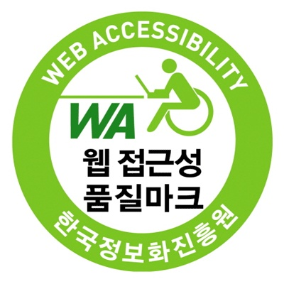

모든 사용자가 !누구나! 접속할 수 있어야한다.(비장애인,장애인,노인,어린이등) 통상적으로 시각장애인을 대상으로 하며 한국에서는 장애인 차별을 금지하는 법이 있다.
웹사이트에 접근하는 모든 통신기기(운영체제,브라우저)의 환경과 관계없이 이용할 수 있어야 한다. 현재 한국 내에서는 크로스브라우징이 중요하다

의미에 맞는 HTPML태그를 적절히 사용하여 웹페이지를 제작
신체발부수지부모
맹자 가라사대, 수업 끝나고 집에 일찍 가자